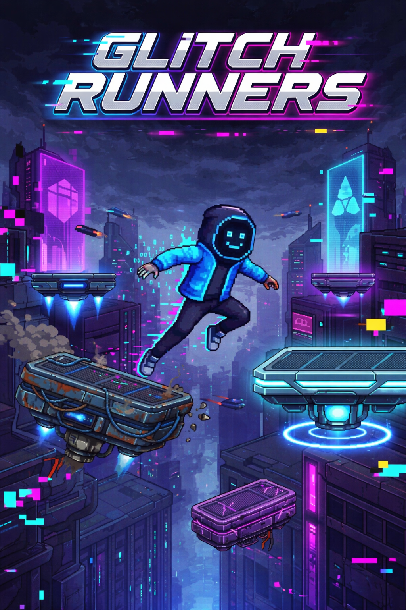

Sobre o Jogo
Em um mundo dominado por falhas digitais, Kai é um runner que atravessa glitches, enfrentando inimigos corrompidos enquanto busca sobreviver em uma realidade instável.
⚡ Parkour em alta velocidade
👾 Inimigos futuristas
🧠 Reflexos rápidos
🏆 Sistema de ranking